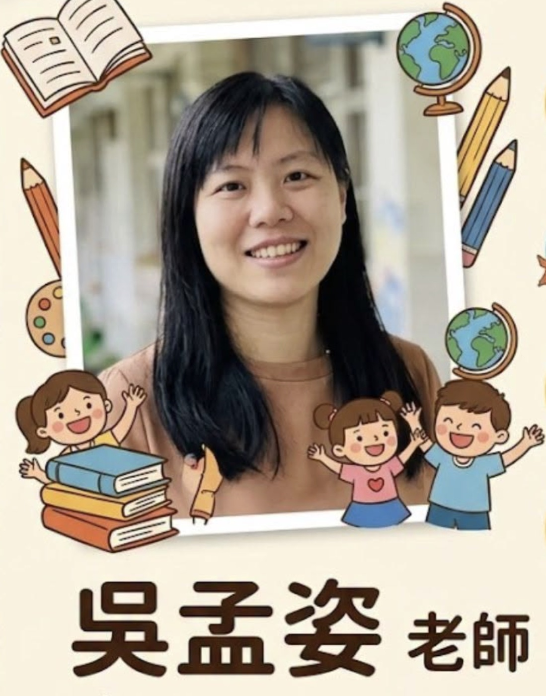

Hsinmin Elementary is thrilled to welcome a new member to our family this summer — Ms. Wu Meng-Zi (吳孟姿老師)! With her warm smile, enthusiastic teaching style, and nearly a decade of classroom experience, we know she is going to bring tremendous energy and love to our students.
About Ms. Wu 吳孟姿老師
臺中教育大學英語學系
指導學生榮獲臺中市語文競賽作文組第三名
Ms. Wu brings with her not just academic knowledge, but also a genuine love for children and a passion for helping young learners find their voice. We are so excited to have her energy, creativity, and warmth at Hsinmin. Please join us in giving her the warmest welcome!
💛💚💜 Welcome to Hsinmin, Ms. Wu! 💜💚💛
新民國小今天迎來了一位全新的家庭成員——吳孟姿老師💛 孟姿老師畢業於臺中教育大學英語學系，擁有近九年的低年級導師資歷，曾服務於臺南三村國小及臺中外埔國小，並成功指導學生榮獲臺中市語文競賽作文組第三名。
孟姿老師以溫暖的笑容😊 和活潑的教學風格深受孩子喜愛，相信她的到來一定能為新民帶來滿滿的活力與愛！
新民大家庭全體歡迎孟姿老師！🎉🎉🎉
Words About Teaching & Growing英語學習角 · 和教學與成長有關的小單字
Six key words from this story, each with an example sentence — then a five-question quiz. Tap 🔊 to listen.
六個關鍵字，每個字配一個例句，最後有五題小考。點 🔊 聽發音。
情境：兩位同學在新學期第一天談論新來的老師。